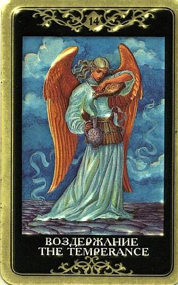

Она считается счастливым предзнаменованием (одно из традиционных значений - «верный итог») и вносит в расклад благотворное влияние.
Умеренность несет смягчение разногласий и снижение напряженности, хотя в то же время обычно указывает, что человек проходит какое-то испытание.
Обещание того, что ситуация успокоится и прояснится.
Выход из тупика будет найден, казавшаяся неразрешимой проблема преодолена, сопротивление исчерпано.

По этой карте без шума и пыли происходит то, что казалось невозможным.
Появляясь в раскладе она говорит о том, что желаемое может быть достигнуто при терпении и самоконтроле.
В ведении этой карты – приспособление, адаптация и комромисс, нейтральная и ровная линия поведения.
Смирение и покорность (или, как пишется в старинных толковниках, «комбинация идей, создающих жизнь моральную и праведную»).
Гармонизация всех сторон бытия, период стабильного развития («плато»), идеальное состояние, единение с собой и с миром.
Радость существования, добродетельная и размеренная жизнь без напряжения.
Гармония, как самое важное в жизни, когда все дышит покоем, согласием и целесообразностью, и держится в разумных пределах без особого труда. По Умеренности размываются контрасты, затягиваются раны, решаются наболевшие вопросы, восстанавливаются силы.
Прогностически означает стабилизацию в делах и успехи, а также то, что в борьбе с превратностями судьбы ждет победа (при добродетельном, мудром и правильном поведении в соответствии со смыслом Аркана).
Умеренность указывает на благоприятный исход событий, однако предупреждает, что не стоит надеяться на форсированное решение - дело будет продвигаться неторопливо, но и без особых препятствий.
Умеренность напоминает, что на одной страсти далеко не уедешь, пар быстро выйдет и погоня за какой-то мега-целью кончится тем, что ты просто-напросто выдохнешься и упадешь. Это необходимость экономить силы и не разбрасываться, чтобы дойти до цели, и проявлять выдержку.
Как сигнификатор вопроса, Умеренность говорит о том, что человек стремится поступить наилучшим образом и ищет правильное решение вопроса.
ЛИЧНЫЕ ОТНОШЕНИЯ
Умеренность кажется бесстрастной, смирной и покорной.
Она описывает ситуацию, когда между партнерами царят скорее уравновешенность, доброжелательность и понимание, нежели «африканская страсть».
Это может показаться скучным, но для тех, кто уже сыт африканскими страстями по горло и порван ими в клочья, мягкий свет Умеренности действительно подобен дару небес.
Милосердный Ангел пролетел, махнул крылом над полем боя, и воцарился мир. Это карта исцеления душевных ран (иной раз практически смертельных), которые люди умудрились нанести друг другу.
Компромиссы, выверенность поступков и отсутствие грубых лишних движений по Умеренности приходят обычно тогда, когда люди уже причинили друг другу немало острой боли.
Кстати, иногда Умеренность говорит и о слепом приспособлении, когда партнеры отчаянно стараются подстроиться друг под друга, чтобы опять не огорчить (или этим занимается один из них, но никак не может понять, что другому нужно).
Эта карта говорит о разрешении проблем в личной жизни и о восстановлении гармонии взаимоотношений.
Этого как будто достаточно для трактовки расклада, но недостаточно для подлинного понимания.
Причиной этих самых «проблем в личной жизни» как правило является некий антагонизм, явное или скрытое противостояние кому-то или чему-то в отношениях, и это трудный опыт.
Самих отношений может вообще не быть, но человек уже заранее (или задним числом) внутренне противостоит партнеру или чему-то, что эти отношения могут принести в его жизнь, и что он не может принять.
Отношения не формируются как раз по причине этого антагонизма, природа которого самому человеку неясна до конца.
В этом случае Умеренность возвещает надежду, что нечто в психике трансформируется, противостояние смягчится, человек примирится с чем-то – в себе, в другом, в природе отношений, в этом мире вообще.
Например придет понимание, что другой не менее и не более беззащитен перед тобой, чем ты перед ним. Добавится милосердия и терпимости. И, как следствие внутренних изменений, изменится к лучшему и ситуация на внешнем плане.
В случае, если противостояние, непримиримость и дисбаланс (например, один дает куда больше, чем получает) имеются в сложившихся отношениях, Умеренность также несет исцеление и равновесие сил.
Она дает мудрое отношение к партнеру, отсутствие завышенных требований или стремления его переделывать и исправлять.
По сути Умеренность учит нас человечному отношению к близкому человеку, умению встать на его точку зрения. Это не столько безусловная любовь, сколько глубокое смирение с природой другого человека как она есть, ее принятие и созерцание с точки зрения ее ценности - она имеет право быть такой и нужна тебе для развития.
Самое лучшее, что можно сделать – все возможное, чтобы преодолеть противоречия и сопротивления, смягчить разногласия, исцелить ситуацию внутренне.
Умеренность говорит об эмоциональной зрелости. Чаши на Аркане соответствуют стихии воды (эмоциям), и переливание воды из одной чаши в другую говорит о необходимости учитывать чувства обоих, быть нейтральнее, не навязывать другому свои устремления, не давить на ситуацию, а постараться мягко включиться в ее ритм и в жизнь другого человека.
Умеренность описывает баланс между самостоятельностью и близостью, независимостью и обязательствами, слиянием и личным развитием, равновесие сил в партнерстве – это подлинное равенство, отличное сочетание двух половин.
Вообще она вселяет надежду, это предзнаменование удачного партнерства, особенно есть в раскладе есть еще какие-то карты, указывающие на связь двух людей.
Счастье, удовлетворение, покой и гармония по Умеренности проявляются как в отношениях, так и наедине с собой.
Надо заметить, что для человека, описываемого Умеренностью, удобство, комфорт и отсутствие страданий и крайностей имеет очень большое значение.